Bienvenue sur mon portfolio
Bonjour !
Je suis Sacha Folcke, j'ai 20 ans et je suis actuellement en 2ème année de DUT Informatique
à l'IUT de Lens. Je suis depuis longtemps passionné d'Informatique et je souhaite en faire mon métier.
Je vous présente mon portfolio montrant plus précisément mon expérience et mes compétences.
En septembre, j'intégrerai l'ISEN Lille en alternance. Je cherche encore une entreprise afin de concrétiser mon projet professionnel qui est de me spécialiser dans la cybersécurité. Ce domaine m'intéresse beaucoup malgré mon manque d'expérience mais je serais ravi d'apprendre avec vous ! Contactez-moi et nous pourrions en discuter.
Mon parcours et diplômes
Baccalauréat Scientifique mention Assez Bien Euro Anglais au Lycée Guy Mollet d'Arras.
Entrée en 1ère année de DUT Informatique à l'IUT de Lens.
Obtention avec brio de la 1ère année de DUT Informatique.
Mon stage se déroule au sein de l'entreprise Wid'Op, petite start-up de conception de sites et d'applications web, majoritairement avec Symfony.
Projection : Obtention de la 2ème année de DUT Informatique.
J'intégrerai l'ISEN Lille en 3ème année en cycle Ingénieur. Je suis préférablement à la recherche d'une alternance dans la cybersécurité réseau.
Compétences et personnalité
Informatique
Familier avec ces langages
C++, Python, Java
HTML/CSS/Javascript, jQuery, TypeScript, notions d'Ajax
SQL, PHP, Framework Laravel et Symfony
GitHub, notions d'UML et Design Paterns
Utilisation courante des systèmes Unix et Windows
Communication
Compréhension et expression avancée de l'anglais (955 points au TOEIC)
Maîtrise orale et écrite du français (Certification Voltaire)
Personnalité
Dynamique et motivé
Extraverti, préfère le travail en équipe
Envie d'apprendre (projets personnels)
Sens de logique
Mes projets
(Cliquez sur les projets pour plus d'informations)
Mastermind
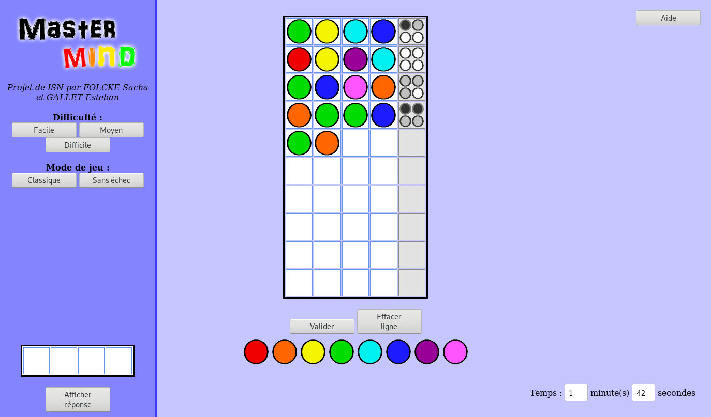 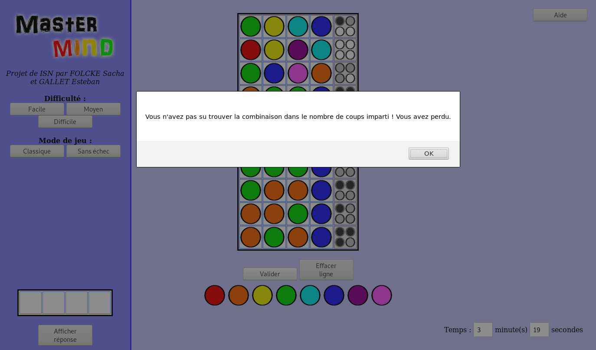 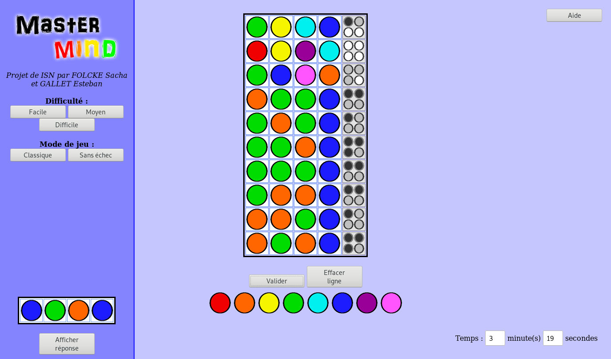<< Photo precédente | Photo suivante >>
Juin 2017 - (Binôme)
Langage(s) utilisé(s) : HTML, CSS, Javascript
Description : Ce jeu sur navigateur était mon tout premier projet, à présenter lors de l'oral de Baccalauréat option ISN (Informatique et Sciences du Numérique). Il s'agit d'une réplique jouable du célèbre jeu de plateau, codée notamment en Javascript. Ce projet a très bien été reçu par le Jury et a récolté la note de 18/20. Ce fut mon premier projet de code et d'algorithmie conséquent et m'a appris à établir des objectifs, une marche à suivre et atteindre un but.
Site Web "Stages à l'étranger"
 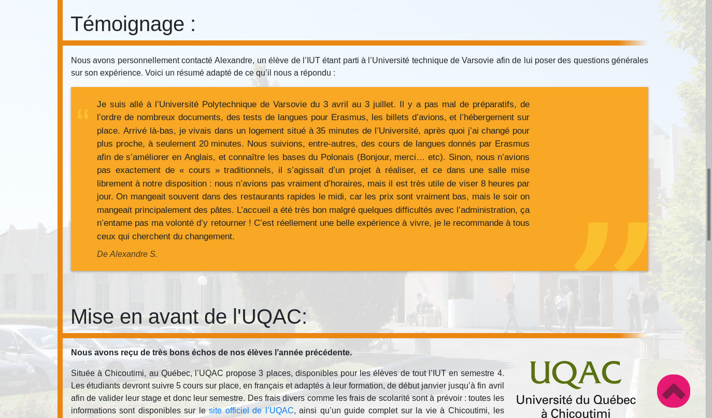 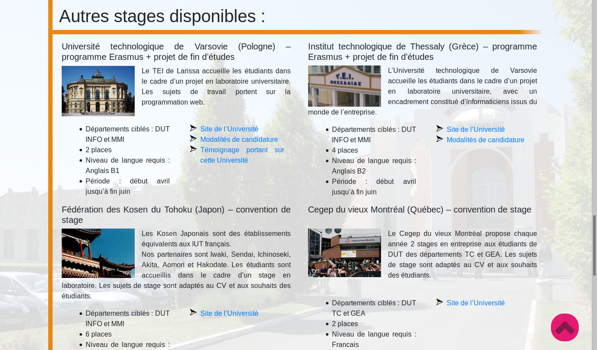
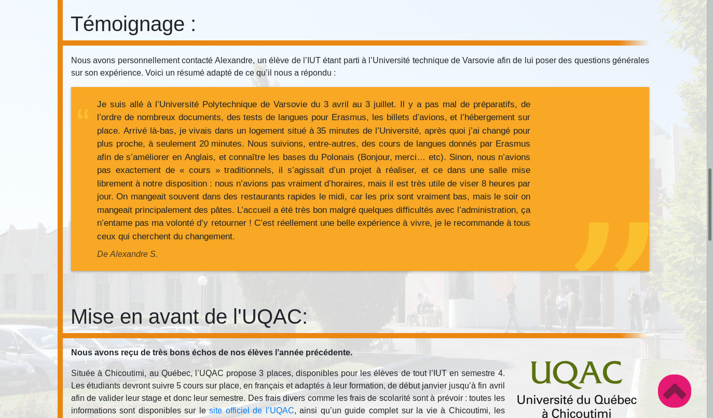 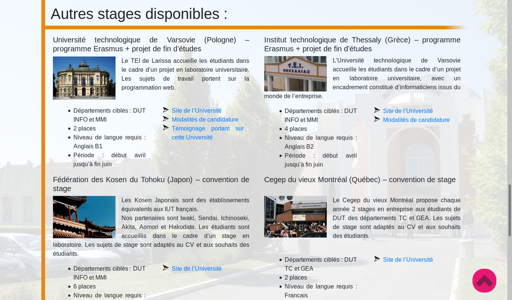
<< Photo precédente | Photo suivante >>
Décembre 2017 - (Groupe de 3)
Langage(s) utilisé(s) : HTML, CSS, Javascript
Description : Il s'agit du projet de fin de semestre 1 de mon DUT. L'objectif était de réaliser un site web servant à guider les étudiants voulant partir à l'étranger pour leur stage du 4ème semestre. Le site devait aussi esthétique qu'informatif. Nous nous sommes donc répartis les tâches au sein du groupe afin d'aboutir au résultat final.
2048
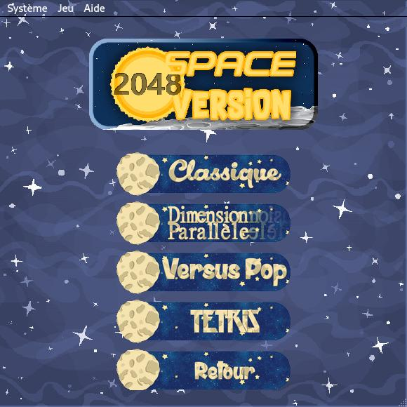 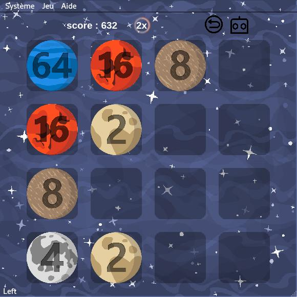<< Photo precédente | Photo suivante >>
Juin 2018 - (Groupe de 4)
Langage(s) utilisé(s) : Python
Description : Voici mon projet de fin de semestre 2 de mon DUT. Il fallait recréer le jeu du 2048 avec toutes ses contraintes. Nous avions le choix du langage et nous avons choisi Python et sa librairie PyQt pour l'interface graphique. Ce fut notre le projet de plus avancé et a demandé beaucoup de documentation afin de le mener à bien. Ce projet à renforcé ma cohésion d'équipe et mon sens d'organisation afin de bien répartir les différentes tâches du projet.
Site d'histoires - Projet marathon 2018
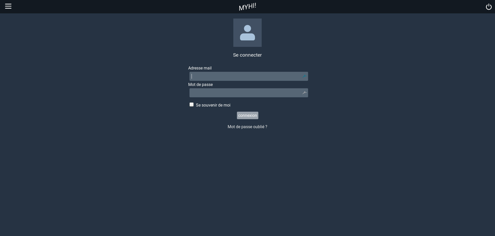 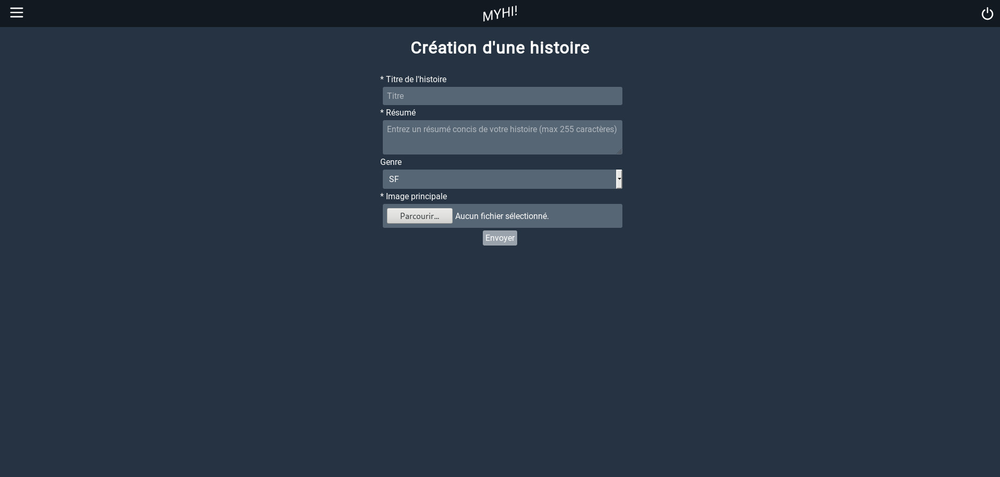 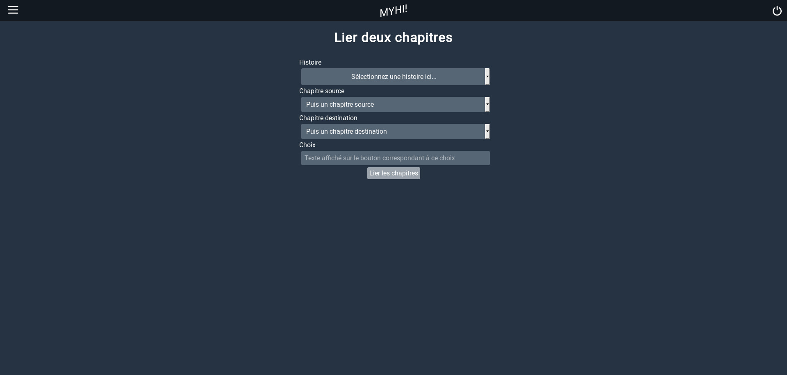 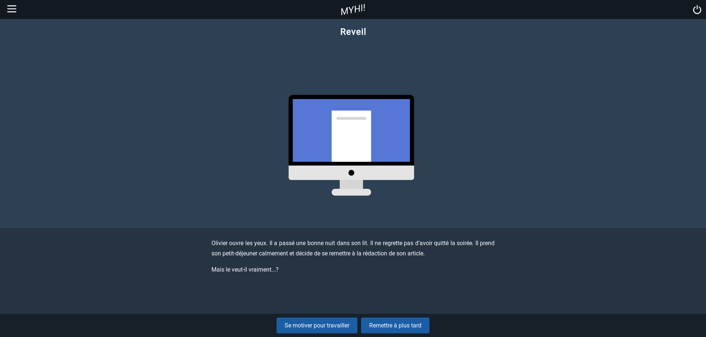<< Photo precédente | Photo suivante >>
19 et 20 décembre 2018 - (Groupe de 4 Info et 4 MMI)
Langage(s) utilisé(s) : PHP, avec le framework Lavarel, HTML, CSS, Ajax
Description : Il s'agit du projet phare propre à l'IUT de Lens. Un sujet est donné le mercredi à 9h, il doit être rendu le lendemain à 18h par chaque groupe de 8 personnes. Nous devions créer un site from scratch répertoriant des histoires à chemins multiples ; il fallait donc tout faire : gérer les histoires, chapitres, choix, leur création, modification, suppression... Nous avons évidemment utilisé PHP, et son framework Laravel afin de rendre ce projet possible. J'ai même pu me pencher sur Ajax (contenu de dropbox dynamique sans rechargement de page). Ce projet m'a beaucoup fait progresser en PHP et m'a fait comprendre l'utilité des frameworks, qui rendent le codage bien plus facile ! Deux jours de codage intensif, certes fatiguants, mais une vraie expérience d'équipe.
Application mobile Ouvrir les yeux
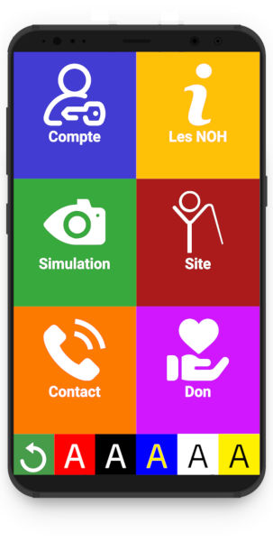 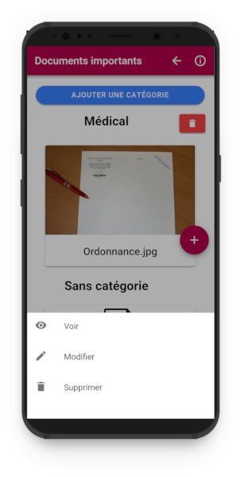 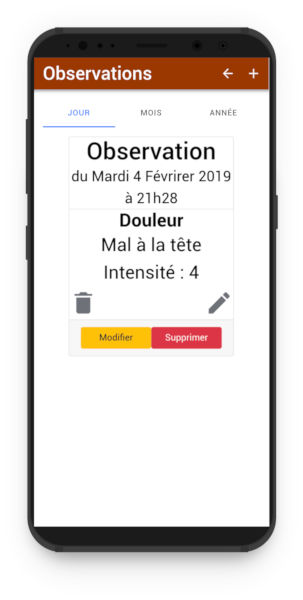 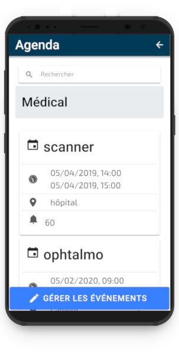
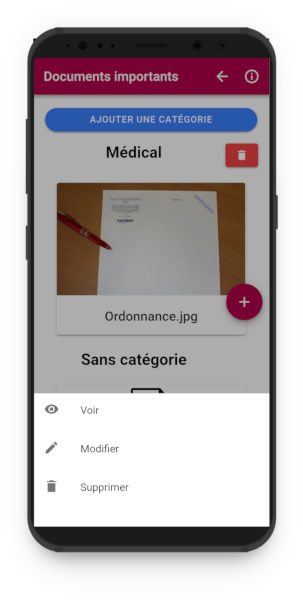 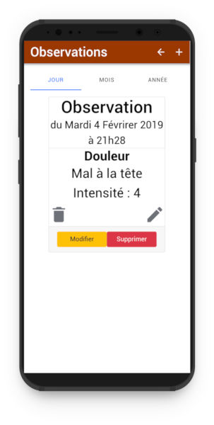 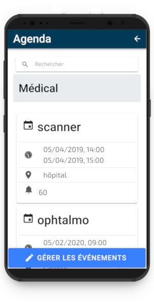
<< Photo precédente | Photo suivante >>
Février à Avril 2019 - (Groupe de 4)
Langage(s) utilisé(s) : HTML, SCSS, Javascript, Angular, Framework Ionic
Description : Pour ce dernier projet de DUT, nous avions pour projet de réaliser une application mobile pour une association caritative qui est Ouvrir les Yeux. Il fallait donner à l'association un support supplémentaire de communication, nous avons donc adapté leur site sur mobile tout en ajoutant des fonctionnalités inédites décrites dans le cahier des charges. De plus, il fallait que l'application soit accessible. Ce projet m'a permis de travailler pour la première fois avec un "client", faisant des demandes et retours, tout en respectant une deadline serrée. Cette application a été rendue possible grâce à Angular et son framework Ionic, et a été très bien reçue.